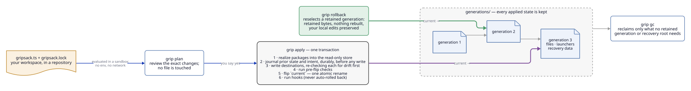

How it works
One binary, grip, with the TypeScript frontend embedded. It evaluates your workspace in a sandbox, turns the result into a typed intermediate representation, and executes that against a content-addressed store with generations. This page follows one declaration from file to deployed state and names the parts along the way.
From gripsack.ts to a plan
- Capture. The core snapshots the repository (minus explicit exclusions). Git ignore rules are not a policy; everything in the tree is evaluated.
- Trust. A local repository is trusted; a
--repoorigin is trusted on first use (trust and review). - Evaluate. A pinned, checksum-verified Deno runs the embedded frontend over the captured source with no environment, network or subprocess access. Host facts arrive as inputs; anything that needs to look at the machine is an explicit probe.
- Admit. The Rust core validates the resulting IR: references, dependency graph, command contracts, provenance for every declaration.
- Plan. The core compares the desired state with what is live. For a typed artifact selector, it shows the concrete path from the referenced package's lock in text and JSON (
resolved_paths). Planning doesn't fetch the payload or claim that the path exists inside it.
The public authoring surface is gripsack.ts and @gripsack/core. The IR is an internal contract; you never write it by hand.
The SDK reports graph mistakes at their declarations, before the core plans anything. A task or hook has no package source or writable staging output. A package check can read its subject with sourcePath(...); a check explicitly attached to a profile file can use sourcePath(".") as data, not as a working directory.
Package runtime dependencies and the packages selected by an environment must match the consumer's OS, architecture and ABI, and must not require a newer OS. An artifact referenced only in an environment variable supplies a path to data, not an executable: it need not match that target. Install-prefix rules still apply. Conda and Pixi packages derive their install prefix from the frozen lock; an environment cannot override it.
For literal profile files, the SDK uses IR10's case-insensitive comparison of destination paths and managed-block markers, even on Linux. Two distinct markers may share one path; a whole-file declaration cannot share it. This is a declaration rule, not a filesystem probe: tree expansion and physical aliases such as symlinks still require the core.
Sources, packages and the store
Sources (githubRelease, tarball, git, conda.environment, pixi.fromLock, …) describe where bytes come from. grip update resolves them and records platform-keyed pins in gripsack.lock; that lockfile is the only source of versions at apply time. Downloads are hashed into private spools, verified, bounded, extracted and sealed read-only in the store before they get a final name.
A package gives a source a target platform, a layout, commands and runtime dependencies. Environments, profiles and tasks all select the same package declarations. Invocation re-admits the package's runtime closure each time rather than trusting whatever is on PATH.
Deployment and generations
A profile combines files, retained package artifacts and launchers for one environment. grip apply realizes packages first, then runs the transaction: journal, write with ownership checks, pre-flip checks, one atomic flip of current, hooks. Every applied state is a generation that keeps its package roots, file content, launcher bindings and recovery data, so grip rollback reuses bytes instead of re-running today's source.


Services, tasks and schedules
Services are digest-pinned containers driven through the Docker Engine API; gripsack owns only the containers and volumes it created and never runs a daemon. Tasks are command graphs with prerequisites, locks and postconditions; schedules register those tasks with the systemd user manager during profile application. Sharing moves signed, passive package bundles between machines or through an OCI registry without evaluating anything on the receiving side.
The rings
Follow a single write through the rings. The kernel compares what the last generation recorded with what the host observed and decides whether to allow the replacement. The journal machine orders the intent before the write. The host must actually sync the journal, re-check the destination and perform the rename.
| Ring | Responsibility in the release | Evidence |
|---|---|---|
| Kernel | gripsack-kernel: pure decisions about identity, ownership, retention and lock publication |
Lean 4 theorems over a translation of the Rust |
| Protocol | Apply, rollback, recovery, GC, journal and activation machines also live in the kernel; drivers supply observations and execute commands | Lean proves machine decisions and ordering, and that journaled leaf evidence survives modeled crashes at mutation admission. Crash-injection tests exercise recovery. |
| Host | gripsack-host: filesystem and process operations, locks, store formats, journal and recovery drivers; gripsack-exec wires operations into the product |
Fault injection, persistence tests and integration tests; filesystem behavior is assumed, not proved |
| Edge | Workspace evaluation and IR admission, fetchers, Conda, Docker and systemd | Sandboxing, typed validation, digest checks and tests of the adapters |
| Product | grip: plan, apply, review and the other commands you run |
End-to-end CLI flows and release-checked example workspaces |
How gripsack stays safe spells out what each ring guarantees and what it does not.
Where the implementation lives
The core crates, the TypeScript SDK, the proofs and the design records are all in one repository.